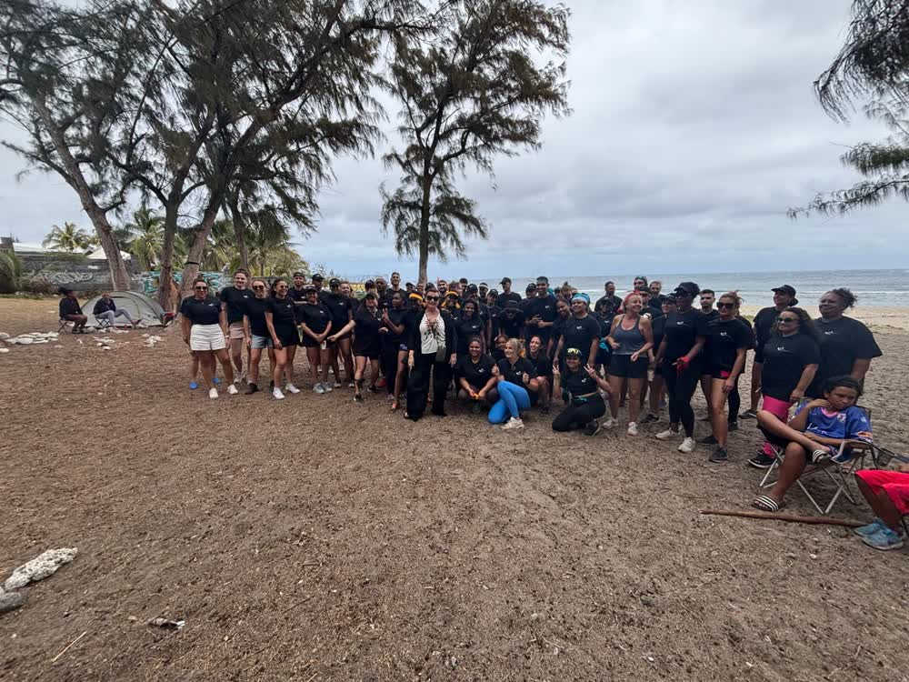

Un séminaire sans team building, c'est une réunion déplacée dans un joli cadre : on a changé de décor, pas de dynamique. Le team building est le moment où le séminaire bascule — où les slides s'arrêtent et où l'équipe se crée des souvenirs. Après 9 ans de séminaires à La Réunion (dont 4 ans aux côtés du Crédit Moderne), voici comment choisir le bon format et le placer au bon endroit du programme.
À quel moment du séminaire placer le team building ?
La règle qui ne rate jamais : la réflexion le matin, la cohésion l'après-midi. Le cerveau est frais pour la plénière et les ateliers ; l'énergie collective explose après le déjeuner, exactement quand une salle de réunion s'endormirait. Sur un séminaire de deux jours, le grand team building se place en général l'après-midi du premier jour : il soude le groupe pour tout le reste — notre programme type sur 2 jours le détaille heure par heure.

Quel format pour quel objectif ?
- Souder après une réorganisation → olympiades ou Koh-Lanta d'entreprise : la compétition bienveillante mélange les services ;
- Faire réfléchir autrement → chasse au trésor à mécaniques d'escape game : les soft skills en action ;
- Détendre un programme dense → jeux en bois géants, quiz musical, atelier cuisine créole : zéro condition physique, 100 % de participation ;
- Marquer les esprits → grand jeu sur la plage au coucher du soleil, avant la soirée de clôture.
Le réflexe à retenir : le format se choisit selon l'effectif, le profil des participants et le lieu du séminaire. Le catalogue le plus complet de l'île est sur notre site dédié : 150 idées de team building à La Réunion.
Séminaire résidentiel : le team building fait l'hôtel
Sur un séminaire résidentiel, le choix du lieu et du team building se font ensemble : une plage à proximité ouvre les grands jeux lagon, un domaine dans les Hauts appelle le rallye nature, une salle unique impose des formats indoor malins. Consultez nos 50 lieux et cadres de séminaire pour croiser les deux. Et à La Réunion, on garde toujours un plan B couvert — la météo fait partie du programme.
Qui doit l'animer ?
Pas le DRH, ni le stagiaire motivé : un animateur professionnel au micro change tout — rythme, équité des épreuves, participation des timides, sécurité. C'est le cœur de métier de Team Building 974, le service cohésion de Pull Up Événements : animateurs, sonorisation, matériel et coordination arrivent ensemble, votre équipe n'a plus qu'à jouer.
Vous préparez un séminaire avec un vrai temps fort de cohésion ? Pull Up Événements conçoit le programme complet — plénière, team building, soirée : 06 93 81 78 82, devis sous 48 h.